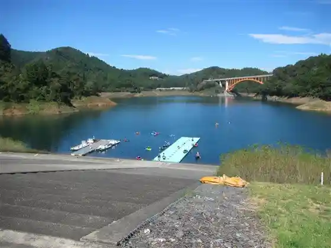
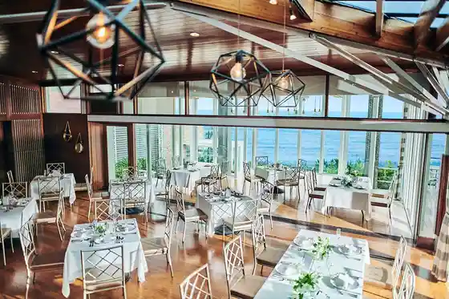

Azuma Yama Park
Ninomiya, Kanagawa · 0463-72-3611 · Official / source link
Shonan Jibiki Ami Ichigoro Maru
Ninomiya, Kanagawa · 0463-68-2522 · Official / source link

Yubi Ho Tei (Shihantei Pine Tree Resort)
Ninomiya, Kanagawa · 0463-43-1611 · Official / source link

Radian Hana no Oka Park
Ninomiya, Kanagawa · 0463-71-3311 · Official / source link
Ni no Ya (Ninomiya Tourism Association Nai, Jiba San, O Miyage Mise)
Ninomiya, Kanagawa · 0463-73-1208 · Official / source link
Ninomiya Futami Memorial Museum
Ninomiya, Kanagawa · 0463-72-6981 · Official / source link
Sagami Kuni Ni Yuki Miya Kawa Ko Shrine
Ninomiya, Kanagawa · 0463-71-0709 · Official / source link
Ninomiya Seseragi Park
Ninomiya, Kanagawa · 0463-72-6112 · Official / source link
Yubi Ho Tei (Shihantei Pine Tree Resort) Kankojigyo Mono Muke UV
Ninomiya, Kanagawa · Official / source link
Azuma Shrine
Ninomiya, Kanagawa · 0438-22-7711 · Official / source link
no Utenki
Ninomiya, Kanagawa · 090-5568-9615 · Official / source link
Jinmei Shrine
Ninomiya, Kanagawa · 0463-72-6912 · Official / source link
GIRINO
Ninomiya, Kanagawa · Official / source link
Lua
Ninomiya, Kanagawa · Official / source link
Ninomiya Kaju Park
Ninomiya, Kanagawa · 0463-71-5956 · Official / source link
Garasu no Usagi Zo
Ninomiya, Kanagawa · 0463-71-3315 · Official / source link
Ni no Miya Kawa Zakka Ten
Ninomiya, Kanagawa · 080-6636-8309 · Official / source link